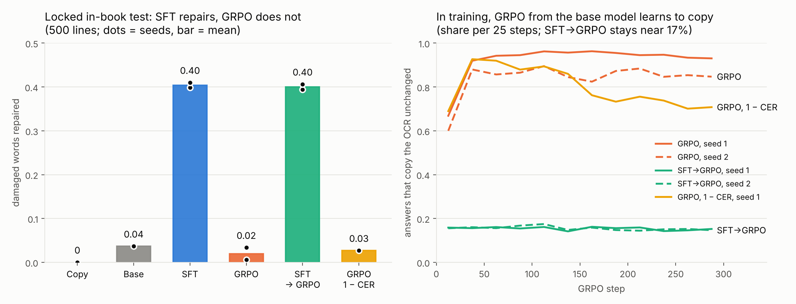

University of Pennsylvania · ai4s.fyi
November 2026 · preprint draft, work in progress, not peer reviewed · github.com/dekunsun/BioEvidenceBench · PDF
Technical report on the training study of BioEvidenceBench (module 7). The locked test was pre-registered and run once; the pipeline test in section 14 is exploratory.

rl-sft-ocr-repair-v1,
not for automatic replacement of library text. GPU spend: about $5.93 of a $20 cap.The main study found that legacy OCR, not extraction, is where most reliability is lost on these books, and that an LLM which repairs OCR on the fly (exploratory condition G2) recovers most of it. This module asks whether a model small enough to run cheaply on all of BHL can learn that repair, and whether a verifiable reward is a better teacher than the expert transcription itself. The test it uses is narrower than the main study: line-level OCR repair, scored word by word against the expert transcription, not downstream extraction F1.
| Unit | one line of the expert transcription (IMPACT ground truth) paired with the legacy BHL OCR aligned to it, plus the nearest OCR line above and below as context |
| Books | five for training, development and in-book test: Butler 1907 (English), Reeve 1849 (Latin and English), Horae Societatis Entomologicae Rossicae 1881 (German, French, Latin, Russian), Das Chitinskelett von Eosentomon 1913 (German), Piscium querelae et vindiciae 1708 (Latin); Cuvier 1835 (French) held out, never read until the test protocol was frozen |
| Split | by contiguous content pages (split v2): train 31,909 lines, dev 3,787, in-book test 3,743 |
| Lines set aside | unreadable characters in the reference, mixed-script words, index lines with leader dots, words the OCR lost and the context cannot supply, confirmed transcription typos (12 checked by the author against the scans, 9 confirmed), 5 manual exclusions |
| Alignment audit | two rounds; the author independently judged 30 pairs: same-line agreement 27 / 28, kappa 0.90 |
| Prompt | repair_v3: context lines first, the line to repair last inside <line>…</line>, "stop where the marked line ends" (section 4.3) |
| Model | Qwen/Qwen3-0.6B, instruct, thinking mode off in every stage (enable_thinking=False, one renderer for SFT, GRPO and evaluation) |
Reward v1.3 (rl/env/task_b_ocr_repair/REWARD_DESIGN.md): for a damaged line, the weighted share
of damaged reference words written exactly (scientific names × 3) minus 0.5 per correct word broken
and 0.25 per word inserted, clipped to [−1, 1]; a clean line scores 1 if nothing breaks. Hard gates
score 0: format (empty, several lines, commentary, wrappers, any <think> tag), length outside 0.5–1.5×
the reference, poor alignment. Case-only differences are neutral; typographic ligatures, MUFI
characters and apostrophes are folded; punctuation is not scored.
rl/training/configs/METRICS.md)| Conditions (P0) | Copy (the OCR), A = Base, A′ = Base after a fixed format clean-up, B = SFT, C = GRPO from Base, D = SFT → GRPO; two seeds per trained condition |
| Ablations | P1: C with the reward 1 − CER (one seed). The data ablation (no name oversampling) and the name-weight ablation were dropped, with the author's agreement, before any test result: C learned no names with both, so removing either could not show a difference |
| Primary metrics | damaged-word repair rate; scientific-name exact recovery; correct-word preservation; format-failure rate; raw and after the fixed clean-up |
| Statistics | paired Δ on the same lines, 95% interval from 2,000 bootstrap resamples of page blocks; a claim needs every seed's interval on the same side of 0; preservation by non-inferiority (margin 1 point, "inconclusive" is never a pass) |
| Reward hacking | an answer with reward ≥ 0.75 that violates a requirement checked independently of the reward, confirmed by hand; more than 2% in a condition means the verifier is not reliable for it |
| Budget gates | $2 smoke test, $13 primary runs, $3 ablations and test, $2 reserve; $20 hard cap |
| Stage | What it showed | Cost |
|---|---|---|
| Stop test | the pod saves, uploads its results to a git branch, checks the upload, then is deleted | $0.02 |
| Calibration (4th launch; 3 failed on environment set-up) | thinking really off (0 <think>); 57% of items give unequal rewards within a group of 8 at T 1.0 (gate ≥ 20%: passed); but mean reward −0.07, pass rate 4%, and 40% of answers run on into the context lines |
$0.20 |
| Smoke test | SFT 0.53 s/step, GRPO 5.8 s/step ($0.14 per 100 steps on an RTX 4090); in 60 steps, GRPO from Base climbed to the copy-the-OCR reward while entropy fell 0.13 → 0.02 and groups without signal rose 59% → 93% | $0.19 |
The author asked whether the input boundary was ambiguous. No input contained a newline; the cause was the prompt layout: v2 put the next line last, right before the answer, and sentences flow across lines, so 70% of run-ons appended the next line.
| Base model, 184 dev items × 8 answers | v2, T 1.0 | v3, T 1.0 | v2, eval decoding | v3, eval decoding |
|---|---|---|---|---|
| Answers running into the context | 41.6% | 1.7% | 40.8% | 1.6% |
| Format failures | 2.5% | 0.6% | 1.4% | 0% |
| Mean reward | −0.064 | +0.096 | −0.019 | +0.162 |
| Pass rate | 3.9% | 15.4% | 5.0% | 18.2% |
| Items with unequal rewards (GRPO's signal) | 56.5% | 54.3% | 18.5% | 18.5% |
v3 removed the confound without reducing the learning signal; it is the prompt for every condition.
($0.07; rl/training/runs/20261121-1756_promptcmp/REPORT.md.)
dapo loss, std scaling per
group, β = 0, lr 1e-6, vLLM colocated, 300 steps.| Dev, chosen checkpoint | Seed 1 | Seed 2 |
|---|---|---|
| Base repair | 0.061 | 0.061 |
| B, SFT 300 steps | 0.324 | 0.315 |
| B, SFT 600 steps (re-run, the author: SFT was still improving at step 300) | 0.358 (step 600) | 0.361 (step 400) |
| C, GRPO from Base | 0.012 | 0.057 |
| D, SFT 600 → GRPO | 0.353 (step 50) | 0.347 (step 50) |
| C-CER, GRPO with 1 − CER (P1) | 0.047 (step 250) | – |
D chose its first checkpoint in both seeds and stayed at or slightly below its SFT start.
Runs: rl/training/runs/20261121-1832_p0s1, _p0s2, 20261121-2007_sft600s1, 20261121-2008_sft600s2,
20261121-2022_p1cer; reports rl/training/runs/STAGE3_P0_REPORT.md.
| Answers copying the OCR, steps 0–49 → 250–299 | Groups with no reward difference | Entropy | Training reward | |
|---|---|---|---|---|
| C, seed 1 | 79% → 93% | 46% → 95% | 0.16 → 0.01 | 0.12 → 0.19 |
| C, seed 2 | 74% → 85% | 55% → 90% | 0.15 → 0.03 | 0.14 → 0.21 |
| C-CER, seed 1 | 81% → 70% (90% at steps 50–99) | 20% → 74% | 0.16 → 0.02 | (1 − CER) 0.85 → 0.86 |
| D, seed 1 | 18% → 18% | 19% → 45% | 0.43 → 0.16 | 0.54 → 0.65 |
| D, seed 2 | 17% → 17% | 24% → 43% | 0.38 → 0.17 | 0.55 → 0.64 |
GRPO from Base collapses onto copying: groups lose all reward variance and the learning signal disappears. GRPO after SFT keeps editing, and its training reward rises by 0.1 while dev repair does not move: a rising training reward was not a better repair.
rl/training/runs/STAGE4_TEST_REPORT.md)Frozen before any test line was scored (rl/training/configs/TEST_PROTOCOL.md with
stage4_models.json, commit 1140608); run once, 16.6 minutes, $0.25. Sets: 500 in-book lines (100
per book; the 17 lines the alignment audits had displayed left out; 93 pages, 12 page blocks),
500 Cuvier lines (319 pages), and 3,226 further in-book lines for a larger confirmation. Evaluation
decoding T 0.7, top-p 0.8, top-k 20; 8 answers per line, pass@1 over answers 0–3.
| Model | In-book repair | Names (22 words) | Preservation | Format failure | Cuvier repair | Cuvier preservation | Larger set repair |
|---|---|---|---|---|---|---|---|
| Copy the OCR | 0 | 0 | 1.000 | 0% | 0 | 1.000 | 0 |
| A. Base (A′ the same) | 0.037 | 0.011 | 0.921 | 4.4% | 0.047 | 0.921 | 0.038 |
| B. SFT s1 / s2 | 0.399 / 0.410 | 0.44 / 0.36 | 0.983 / 0.982 | 0.2 / 0.7% | 0.213 / 0.212 | 0.981 / 0.982 | 0.527 / 0.510 |
| C. GRPO s1 / s2 | 0.006 / 0.034 | 0 / 0 | 0.996 / 0.990 | 0.3 / 0.4% | 0.002 / 0.011 | 0.999 / 0.998 | – |
| D. SFT → GRPO s1 / s2 | 0.394 / 0.406 | 0.42 / 0.33 | 0.986 / 0.987 | 0.2 / 0.4% | 0.200 / 0.209 | 0.983 / 0.985 | 0.525 / 0.508 |
| C-CER s1 | 0.027 | 0 | 0.993 | 0.3% | 0.032 | 0.995 | – |
Cuvier has 10 damaged name words (7 lines), so names there are descriptive.
| Question | Comparison | Seed 1 | Seed 2 | Verdict |
|---|---|---|---|---|
| Does GRPO improve the delivered repair? | C − A, in-book | −0.031 [−0.060, −0.016] | −0.003 [−0.011, 0.008] | No; seed 1 below Base |
| … content, not only format? | C − A′ | same within 0.002 | No | |
| … on the held-out book? | C − A, Cuvier | −0.046 [−0.082, −0.018] | −0.037 [−0.072, −0.011] | No; both below Base |
| Does SFT → GRPO add to SFT? | D − B, in-book | −0.004 [−0.020, 0.001] | −0.004 [−0.012, 0.003] | No |
| D − B, larger set | −0.002 [−0.005, 0.001] | −0.002 [−0.010, 0.006] | No | |
| D − B, Cuvier | −0.014 [−0.033, 0.010] | −0.003 [−0.017, 0.010] | No | |
| Preservation, D − B | margin 1 point | +0.003, interval above 0 | +0.004, above 0 | Pass, everywhere |
| Names without harm, D − B | −0.023 [−0.083, 0.038] | −0.034 [−0.096, 0.000] | No gain | |
| (descriptive) SFT − Base | in-book / Cuvier | +0.362 / +0.166 | +0.373 / +0.165 | intervals well above 0 |
| P1: does a dense reward escape copying? | C-CER − C / C-CER − A, in-book | +0.021 [0.007, 0.039] / −0.010 [−0.030, 0.001] | slightly better than C, not above Base |
A page-level bootstrap (93 pages, sensitivity only) agrees with every verdict.
| Model | In-book pass@1 | pass@8 | Cuvier pass@1 | pass@8 |
|---|---|---|---|---|
| Copy | 0.478 | 0.478 | 0.752 | 0.752 |
| Base | 0.376 | 0.422 | 0.577 | 0.636 |
| SFT s1 / s2 | 0.561 / 0.554 | 0.612 / 0.598 | 0.703 / 0.710 | 0.758 / 0.768 |
| GRPO s1 / s2 | 0.478 / 0.486 | 0.482 / 0.494 | 0.747 / 0.747 | 0.748 / 0.750 |
| SFT → GRPO s1 / s2 | 0.567 / 0.562 | 0.610 / 0.604 | 0.718 / 0.726 | 0.762 / 0.774 |
GRPO's pass@1 beats Base's only because a copied clean line scores 1: it equals Copy's. After SFT, GRPO raises pass@1 by under a point and leaves pass@8 unchanged, the pattern Yue et al. (2025, arXiv 2504.13837) describe: RL makes answers the policy already gives slightly more likely.
rl/training/results_7c/ATTRIBUTION_7C.md)By error type (in-book repair rate):
| Damaged word | Words | Base | SFT | GRPO | SFT → GRPO |
|---|---|---|---|---|---|
| Ordinary misread letters | 399 | 0.05 | 0.45–0.47 | 0.01–0.05 | 0.45–0.46 |
| Long s (ſ) | 169 | 0 | 0.32–0.35 | 0 | 0.32–0.35 |
| Split by the OCR | 34 | 0.07 | 0.25–0.29 | 0.02–0.05 | 0.24–0.29 |
| Ligature (æ œ) | 29 | 0 | 0.31–0.39 | 0 | 0.28–0.36 |
| Scientific name | 22 | 0.01 | 0.34–0.43 | 0 | 0.32–0.40 |
| Digit | 9 | 0.03 | 0.22–0.25 | 0 | 0.22–0.25 |
Base never writes the long s or a ligature the OCR lost: these are conventions of the expert edition, which SFT shows and GRPO would first have to sample.
By edit behaviour (in-book): Base edits 50% of lines and only 4% of its changes are right; SFT edits 61–62% with 41–43% precision; GRPO from Base edits 7–17%. SFT → GRPO keeps SFT's edits and repairs but breaks 0.10 instead of 0.13 correct words per answer, which is its preservation gain and exactly what the −0.5 penalty asks for.
By difficulty before training: on the 289 in-book lines Base never got right in 8 tries, SFT reaches pass@1 0.30 (GRPO 0.12–0.13, almost all from copying clean lines it used to damage).
The author's reading of 43 test lines (Base wrong / D right, and the reverse): all 25 "D right" lines
are genuine repairs matching the expert line (misread letters, Latin endings, long s, a ligature
in a subfamily name), and D stops at the line-end hyphen where Base continued. Of 18 "D wrong" lines,
13 change correct words with no support on the line (Visagapatam → Viseugapatam), 4 apply a
language prior the book does not follow (valde → valdè, l'interieur → l'intérieur), and 1 is a
scoring problem (hole H5 below).
rl/REWARD_AUDIT.md part 2)Constructed probes (17 kinds of answer × 585 dev lines): no probe scores above the honest answer. Held: empty answers, deleting hard words (−0.03, below copying), lower-casing, misspelling one word, several lines, run-on, commentary, writing the line twice.
| Hole | What it allows | Seen? |
|---|---|---|
| H1 Copying is a safe floor (0 on a damaged line, never negative; a broken word −0.5; under 1 − CER copying scores 0.81–0.90) | stop repairing | decided the GRPO result |
| H2 One inserted word costs only 0.25 (an invented word on a clean line scores 0.75) | pad lines | Base 2.4% of test answers, trained ≤ 0.15% |
| H3 Punctuation is not scored | ignore punctuation | 7–12% of answers score 1.0 with different punctuation |
H4 A word broken by the line-end hyphen can be finished for free (au- → au-dessus scores 1.0), found by the author |
continue the next line's word | Base 43 test answers at 1.0; no trained model; never rewarded in training |
H5 Dash glyphs scored inconsistently (45-46 → 45–46 loses 0.5; 16% of in-book damaged words differ only in a dash glyph), found by the author |
unfair penalties; credit for learning the edition's dash habit | SFT's repair rate without dash-only words is 0.39 instead of 0.40; no conclusion changes |
Confirmed reward hacking (the author judged 30 blind candidates, all violations): Base 2.2% in-book, 3.4% Cuvier, above the 2% threshold, so Reward v1.3 is not a reliable judge of the untrained model; trained models 0–0.45%. These are lower bounds (one independent check found the candidates). Fixes go into Reward v1.4, which is planned and not built (decided so far: all dash glyphs compared as one class). A strict-xfail test documents H4.
rl/RELEASE_DECISION.md)| Decision (the author) | publish B, SFT seed 2 as a research checkpoint; no production use; no further GPU training for now |
| Why B, not D | B meets every pre-registered criterion D meets; D's extra GRPO step buys 0.3 points of preservation and no repair. Seed chosen on dev (0.361 vs 0.358), not on a test result |
| Why not production | 40% repair in-book, 21% on the French book, and about 1.8% of correct words changed: a library would introduce new errors into correct text |
| Pre-release checks | file is the one tested (frozen asset id and size); SHA-256 computed; tar holds only model and tokenizer files; licences (Qwen3-0.6B Apache 2.0, finebooks/bhl-impact-gt CC-BY 3.0, all six BHL items not in copyright); model card with results, regressions and out-of-scope use |
| Release | rl-sft-ocr-repair-v1: sft_s2.tar, 1,203,578,880 bytes, SHA-256 bfeb5657e7e078d25b1c47c64a8afd2c63c80d5e8bb0594f285d0fafdea16e8c, tag at training commit c994ade; download checked by the author |
| Run | Minutes | GPU (estimate from run time) |
|---|---|---|
| Stop test | 1 | $0.02 |
| Calibration, 3 failed launches + 1 success | 13 | $0.20 |
| Smoke test | 13 | $0.19 |
| Prompt v2 vs v3 | 5 | $0.07 |
| P0, seeds 1 and 2 (in parallel) | 87 + 74 | $2.39 |
| SFT 600 re-run, seeds 1 and 2 | 56 + 61 | $1.74 |
| P1 reward ablation | 44 | $0.65 |
| Locked test | 17 | $0.25 |
| Publishing | 3 | $0.03 |
| Pipeline test: repair the 22 sample pages (section 14) | 5 | $0.07 |
| Total | $5.59 by run time; about $5.93 by RunPod balance (pod start-up and deletion delays included) |
All on RunPod, mostly Secure RTX 4090 at $0.89/h. Earlier, the task B API trial (Haiku and Opus as policies on 200 dev items) cost $4.24 of Claude API budget, separately.
All of these were decided on dev data or before the locked test, and are logged in rl/LOG.md:
prompt v2 → v3; training mix with about 20% clean lines; float32 master weights; seed-specific block
order; SFT 300 → 600 steps (B and D re-run); P1 reduced to the reward ablation; Cuvier built with the
automatic rules only (nobody had read it); reward-hacking candidates split into punctuation-only and
word-level, because punctuation is unscored by design. Deviation: the plan asked for release
criteria written by the author before the results; none were written separately, so the release decision
applies only the pre-registered decision rules and marks its practical criteria as written afterwards.
Legacy OCR of the 22 sample pages repaired line by line by sft_s2 (greedy, repair_v3, 924 lines,
$0.07 on the GPU), then the frozen G1 extraction with Opus on the 16 test pages ($0.25). Value F1 rises
from 0.60 to 0.67 (Butler) and 0.64 to 0.72 (Reeve); paired page bootstrap +0.07 [0.04, 0.10] and
+0.08 [0.02, 0.12]. That is about a fifth of the gap to dots.mocr (0.95 / 0.98) and far below Opus
repairing while it extracts (G2, 0.96 / 0.91). Of 350 primary test mentions it fixed 31 and broke 6, all
6 intact names turned into other plausible names (B. oreades → B. ovoletes, LICHT. → LINN.).
A small line-level repair model is not a substitute for re-OCR; if used, the original line must be kept
beside the repair. Rules fixed before the run: results/sft_repair_pipeline/PLAN.md; results:
results/sft_repair_pipeline/REPORT.md.
| What | Where |
|---|---|
| Training report (all of the above in one place) | rl/TRAINING_REPORT.md |
| Design and decision rules | rl/training/configs/METRICS.md, TEST_PROTOCOL.md, stage4_models.json |
| Environment, reward, data rules | rl/env/task_b_ocr_repair/ (REWARD_DESIGN.md, SPLIT_V2.md, build/) |
| Code | rl/training/ (stage1_calibrate.py, stage2_smoke.py, stage3_p0.py, stage4_test.py, analyze_test_7b.py, attribution_7c.py), src/rl_task_b*.py, rl/training/runpod/ |
| Runs | rl/training/runs/ (one folder per pod run; STAGE3_P0_REPORT.md, STAGE4_TEST_REPORT.md) |
| Test analysis, attribution | rl/training/results_test/, rl/training/results_7c/ |
| Reward audit, release | rl/REWARD_AUDIT.md, rl/RELEASE_DECISION.md, rl/release/ |
| Toy GRPO (7a) | rl/training/toy_grpo.py, rl/training/NOTES_zh.md |
| Figure | src/plot_rl.py → docs/figures/rl_results.png |
rl-sft-ocr-repair-v1），不可用于自动替换原文。GPU 总花费约 $5.93，上限 $20。results/sft_repair_pipeline/REPORT.md）。